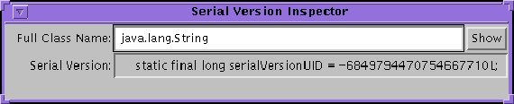

| CONTENTS | PREV | NEXT | Java Object Serialization Specification |
The program serialver can be used to find out if a class is serializable and to get itsserialVersionUID. When invoked with the-show option, it puts up a simple user interface. To find out if a class is serializable and to find out its serialVersionUID,enter its full class name, then press either the Enter or the Show button. The string printed can be copied and pasted into the evolved class.

When invoked on the command line with one or more class names, serialver prints theserialVersionUIDfor each class in a form suitable for copying into an evolving class. When invoked with no arguments, it prints a usage line.